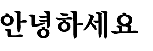
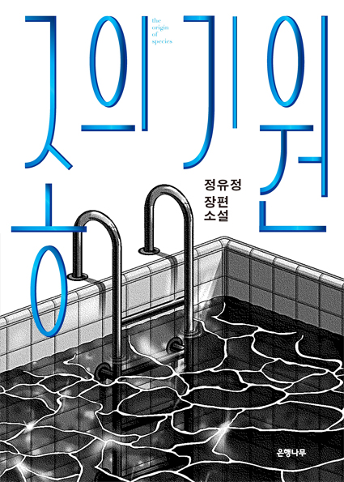

안녕하세요. 당신의 북가이드 chaeny입니다.
다음 4가지의 항목은 당신에게 드리는 책 추천입니다.
밑으로 스크롤 해 주세요.
저자가 말하는 ‘합리적 개인주의’란 유아적인 이기주의나 사회를 거부하는 고립주의가 아니다. 합리적 개인주의자는 인간은 필연적으로 사회를 이루어 살 수밖에 없고, 그것이 개인의 행복 추구에 필수적임을 이해한다.
저자가 꿈꾸는 사회ㅡ개인주의, 합리주의, 사회의식이 균형을 이룬 사회가 바로 그런 사회이리라. 여기에 공감한다면 저자의 말대로 “링에 올라야 할 선수는 바로 당신, 개인”이다.
나미야 잡화점의 기적
세 사람의 솔직하고 엉뚱한 조언은 뜻밖의 결과를 불러오며 기적을 만들어낸다. 각 장마다 고민 상담 편지를 보낸 사람들의 사연이 담겨 있고, 세 번째 장에서는 32년 전 ‘나미야 잡화점’의 원래 주인이었던 나미야 유지가 어떻게 해서 사람들의 고민 편지를 받게 되었는지 그 과정이 펼쳐진다. 고민 상담 편지에 얽힌 비밀이 이야기가 거듭될수록 조금씩 풀려가는 촘촘한 짜임새가 돋보인다. 나아가 살다가 한 번쯤 마주치는 선택의 문제와 사람 간의 관계에 대해 생각해보게 한다.

사이코패스 중에서도 상위 1퍼센트에 속하는 ‘순수 악인’인 유진을 그리기 위해 저자는 어린 시절부터 학습되어 온 도덕과 교육, 윤리적 세계관을 철저하게 깨나갔고, 내 안의 악이 어떤 형태로 자리 잡고 있다가, 어떤 계기로 점화되고, 어떤 방식으로 진화해 가는지 상세하게 써내려갔다. 저자는 이를 통해 우리의 본성 안에 자리 잡은 그 ‘어두운 숲’을 똑바로 응시하고 이해하며 내면의 악, 타인의 악, 나아가 삶을 위협하는 포식자의 악에 제대로 대처해나가길 바라고 있다.
Thanks